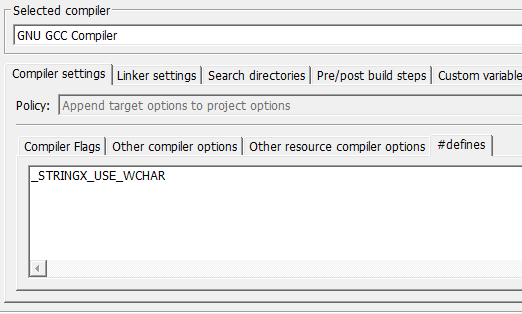

if (strcmp(input, "exit")) // oops! missing '== 0'...
{ ...
With StringX, it will be
if (strxIs(input, "exit", 0)) // elegant!
{ ...
where the 3rd argument can be replaced with STRX_FLAGS.
STRX_FLAGS f = STRX_CASE_INSENSITIVE; // most users aren't case-sensitive
if (strxIs(input, "exit", f)) {...}
else if (strxIs(input, "help", f)) {...}
With STRX_FLAGS, many things work wonder.
// If contain the ENTIRE keyword...
if (strxHas(input, F_BOMB_WORD, f)) {...}
// If contain ONE of the keyword...
if (strxHas(input, INVALID_CHARS, f | STRX_KEY_AS_SINGLE_CHAR)) {...}
StringX also supports both ASCII and UTF-16 char type.